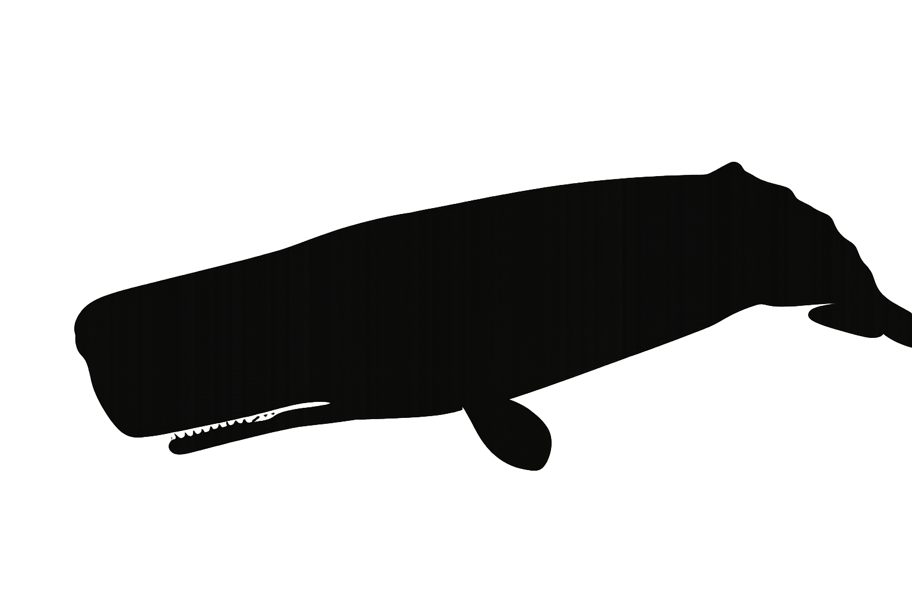
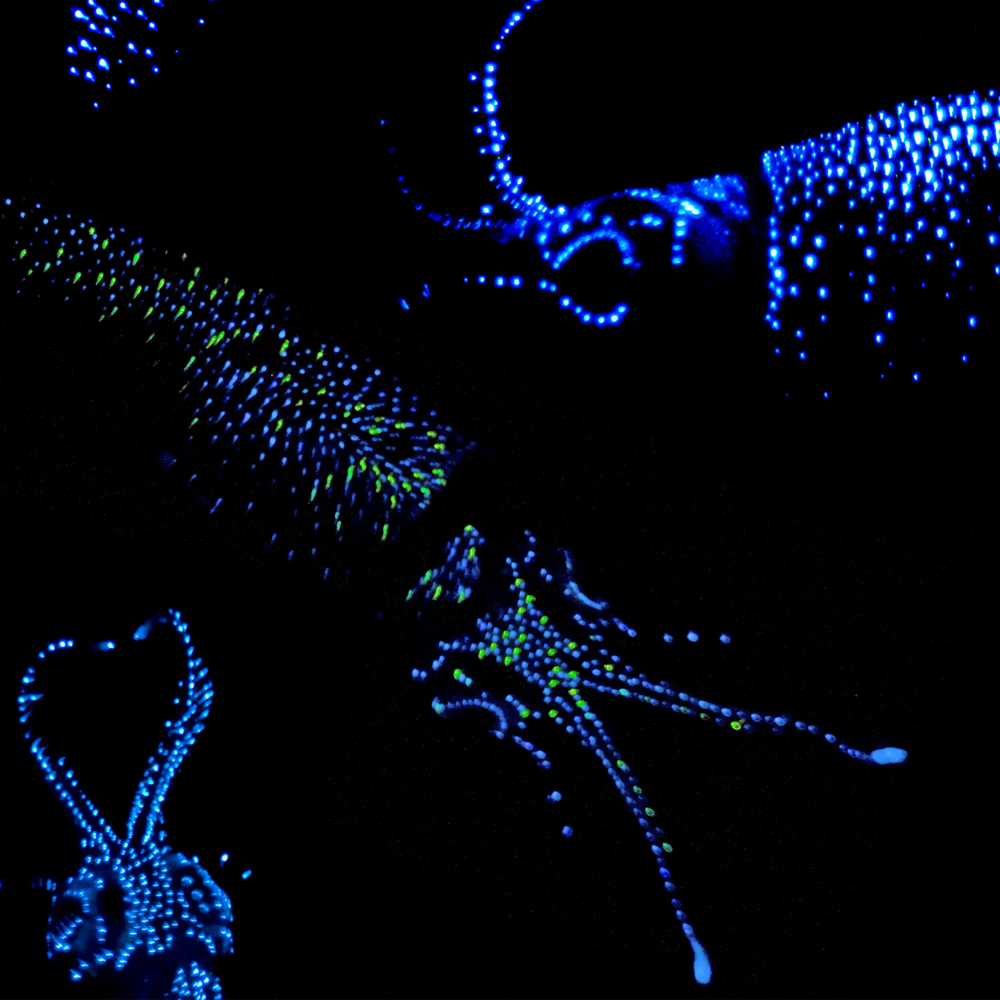

2 a. VISUAL: The Right Team:
Knolling image or infographic
Narrative
Title: TBA
Introduction and Disclaimer, if needed:
This is a work of fiction, but the creators of this story are a group of scientists and designers dedicated to scientific accuracy. While our main characters, the sperm whales, giant squids, and the scientists studying them, are fictional, our team went through great lengths to ensure that all facts about whales, squid and the way we study them comes from peer-reviewed, or otherwise trusted sources.
Welcome to a very special learning experience, where we follow marine researchers, who follow a sperm whale hunting a giant squid off the coast of current-day Spain. Please join us as we virtually piggyback on one of the largest predators on the planet, using cutting-edge science to reveal their secrets for survival in a changing world.
1. Hero/Myth
2.a. Meet the Scientists
2. b. Meet the Tech

With a typical lifespan of around five years, these huge invertebrates use the following physical and behavioral tools to survive full-time in the mesopelagic zone:
Instead of being born with a bag of tricks like giant squids, sperm whales are born with curious minds and a desire to babble their pod’s coda until they speak their ancestors’ language properly. To master the coda is to bond with the pod, and to succeed in the daily hunts. As mammals, sperm whales must consume far more calories in a day than a similarly-sized shark or giant squid to maintain in eternal body temperatures suitable for homeostasis. This means frequent practice dives with lots of guidance and feedback from the pod elders. Where better to seek prey multiple times per day than the diverse and abundant mesopelagic zone? All you need are the right tools to enter this challenging- but rewarding- environment.
Sperm whales also have a handful of adaptations that physically allow them to dive deeper and longer than most other cetaceans, as well as capture and digest some of the world’s largest invertebrates:
The Conflicts:
From all of us at the Museum of Ocean Sciences, we would like to thank you for joining us today on this extraordinary journey to the deep and back!
Entrenched in an evolutionary arms race, sperm whales and giant squids coexisted as predators and prey for millions of years, only to be challenged by the emergence of a new expert communicator: humankind. Recently, humankind has entered a new era of exploration and, at times, exploitation, wielding communication as a tool to supersede basic survival. Through the engagement with a thrilling (but fictional) case study of a sperm whale pod hunting a giant squid in the mesopelagic zone off of the coast of contemporary Spain, we discovered the power of communication and learned behaviors can change the success of a hunt, a mission, and two species’ long-term perseverance.
Citizen Science Programs in the USA:
Special thanks and acknowledgements
Hero image. Whale&Squid~11-29-08.JPG, WiKiRaW31, Wikimedia Commons, public domain. Adapted for this site with color and shading edits.
Beat 3, frame 1. Satellite-tagged sperm whale fin (22735046228).jpg, USFWSAlaska, Wikimedia Commons, public domain. Adapted for this site with cropping.
Audio. Sperm Whale Creak 2.ogg, NOAA, from Wikimedia Commons, dated April 1, 2013. Public domain as a U.S. National Oceanic and Atmospheric Administration work.
Scientific and interpretive source citations can be listed here as they are added to the story.
Scanning the darkness with the largest eyes in the animal kingdom, giant squids (Archetuethis dux) focus on bioluminescent trails- the “soup” of bioluminescent plankton that is disturbed and illuminated by a pod of diving sperm whales, like the spinning, rolling wake behind a speedboat or a flurry of snowflakes.

Unable to “hear” a sperm whale's high-frequency echolocation that they use for long-range communication, a suspicious squid can adopt a vertical position in the midwater, reducing its acoustic cross-section as its predators approach and “scan” for it with echolocation.
With a typical lifespan of around five years, these huge invertebrates use the following physical and behavioral tools to survive full-time in the mesopelagic zone:




Instead of being born with a bag of tricks like giant squids, sperm whales are born with curious minds and a desire to babble their pod’s coda until they speak their ancestors’ language properly. To master the coda is to bond with the pod, and to succeed in the daily hunts.
Sperm whales also have a handful of adaptations that physically allow them to dive deeper and longer than most other cetaceans, as well as capture and digest some of the world’s largest invertebrates:
Both altricial animals, like sperm whales (Physeter macrocephalus), and precocial animals, like giant squids (Archetuethis dux), need a stable environment for maintaining stable populations, and, in the case of sperm whales, for cultural sustenance.